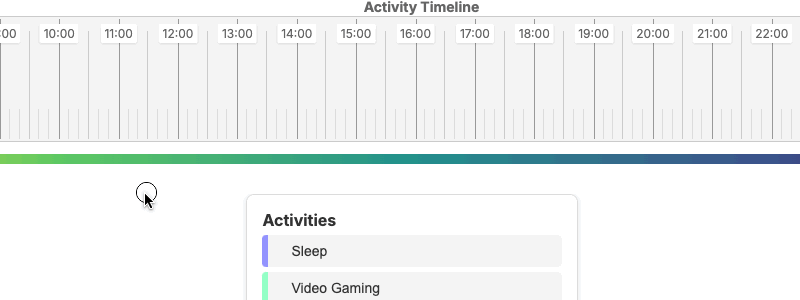
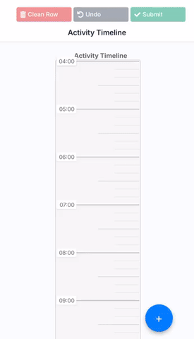
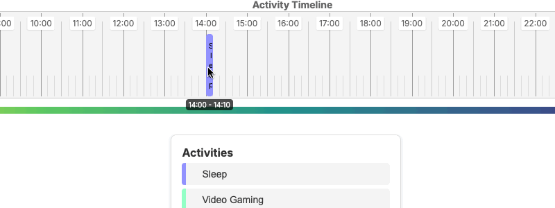
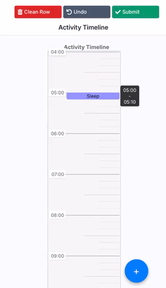

How to Use the Diary
1
Select and Place an Activity
Choose an activity from the menu at the bottom of the screen, then place it on the timeline.

Tap the (+) button in the bottom right corner to open the activity menu, then select an activity and tap where you want to place it on the timeline.

2
Adjust Activity Duration
Click and drag the edges horizontally to set the duration.

Drag the edges vertically to set the duration.

3
Submit Your Diary
Once you've recorded all your activities for the day, click the Submit button to complete your diary.
Click to submit your completed diary
Helpful tools
Did you make a mistake? Reverse your last action
Want to start over? Clean the row
Activity not listed? Add a custom activity